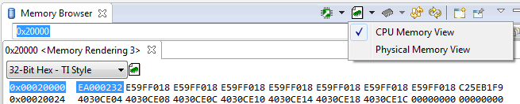

<!-- Start of markdown source -->
#Overview
This guide provides suggestions for Code Composer Studio (CCS) users experiencing *data verification* errors when attempting to load their executable on to their target.
#Background
A common error encountered by CCS users attempting to download their application for the first time on actual hardware is something called a *data verification* error. This error can maifest in a number of ways, the most common looking like:

There will also be related error messages in the debug console, along the lines of:
<pre>
Cortex_M3_0: Loader: One or more sections of your program falls into a memory region that is not writable. These regions will not actually be written to the target. Check your linker configuration and/or memory map.
Cortex_M3_0: File Loader: Verification failed: Values at address 0x00000020 do not match Please verify target memory and memory map.
Cortex_M3_0: GEL: File: C:\ti\workspaces\910\m3x\Debug\m3x.out: a data verification error occurred, file load failed.
</pre>
The actual meaning of a *data verification* error is that when CCS tried to verify the contents of the target memory with the specified executable to load to target memory, a mismatch was found. The most common cause of this is because CCS was unable to successfully load the executable on to the target. More specifically, it was unable to write the executable binary to the memory locations as specified in the symbolic information as part of the executable. An executable that can be loaded by CCS consists of the actual target code and some debug symbols. The executable generated by a CCS project has a default filename extension of *.out.
Since the executable was not successfully loaded, the verification would fail. This article will focus on this particular failure and how to resolve it.
#Causes
The reasons why CCS was unable to write the executable binary to the specified memory locations can vary quite a bit. But essentially what it means is that there is a mismatch on what the:
* **Code Generation Tools** (specifically the Linker) *thinks* is available (writable) memory on the target you are building the application for
* **CCS debugger** *thinks* is available (writable) memory on the target
* **Available writable memory** is on the target *at the time the program load was attempted*
It is important to understand all three environments and make sure they are all properly aligned to avoid such errors.
##Code Generation Tools
[[y NOTE
This section assumes you are using the TI Code Generation Tools. If you are using GCC, the equivalent file for GCC is a Linker Script File (often with a *.ld extension). Refer to [this document](https://www.math.utah.edu/docs/info/ld_3.html#SEC4).
]]
The first step is to make sure you build your application with a correct [linker command file](./sdto_cgt_Linker-Command-File-Primer.html).
<iframe width="854" height="480" src="https://www.youtube.com/embed/V1680155JTU" frameborder="0" allowfullscreen></iframe>
It is during the linking stage of your application build where the linker combines object files and allocates sections into the target system's configured memory. The linker command language controls memory configuration, output section definition, and address binding. You configure system memory by defining and creating a memory model that you design. Two linker directives, **MEMORY** and **SECTIONS**, allow you to allocate sections into specific areas of memory. The **MEMORY** directive defines the target memory configuration. The **SECTIONS** directive controls how sections are built and allocated. These directives are often used in what is called the 'linker command file' (*.cmd), which is passed to the linker. Without this file, the linker will not know the target memory configuration and how to properly allocate the sections. It will use default properties when allocating the sections of code. On actual hardware, these default are often not applicable. Hence it is very important to use a correct linker command file for your target. A board specific linker command file is recommended since device specific linker command files would not be aware of things like external memory. Depending on the target, CCS may provide a default linker command file for your target when creating a project. This is more common with MCU devices (MSP430, C2000, Stellaris). For more complex devices like OMAP, Sitara, DaVinci, etc it is more uncommon (though much improved starting with CCSv5.2 and greater) and example linker command files for these targets are often provided by some target content package like a BSP (Board Support Package) or an SDK.
Below is an example of what an example linker command file looks like for a C6748 EVM. Everything is configured to be loaded into shared ram starting at 0x8000000:
```
/*****************************************************************************
* linker command file for C6748 test code.
*
* Copyright 2009, Logic Product Development Company. All Rights Reserved.
******************************************************************************/
-l rts67plus.lib
-stack 0x00000800
-heap 0x00000800
MEMORY
{
dsp_l2_ram: ORIGIN = 0x11800000 LENGTH = 0x00040000
shared_ram: ORIGIN = 0x80000000 LENGTH = 0x00020000
external_ram: ORIGIN = 0xC0000000 LENGTH = 0x08000000
arm_local_ram: ORIGIN = 0xFFFF0000 LENGTH = 0x00002000
}
SECTIONS
{
.text > shared_ram
.const > shared_ram
.bss > shared_ram
.far > shared_ram
.switch > shared_ram
.stack > shared_ram
.data > shared_ram
.cinit > shared_ram
.sysmem > shared_ram
.cio > shared_ram
}
```
For more deatils on linker command files, please refer to the [Linker Command File Primer](./sdto_cgt_Linker-Command-File-Primer.html)
[[b BIOS
If you are using DSP/BIOS or SYS/BIOS, a linker command is auto-generated. The target memory layout is defined in the BIOS tcf/cfg file. Selecting the right device (for example, using the correct platform file for SYS/BIOS) is often enough to have a valid linker command file generated when building the BIOS project.
]]
##Debugger Memory Map
The debugger memory map will specify the target's memory configuration to the CCS debugger. Since the debugger knows nothing about the information in the linker command file, it has no knowledge of the target's memory configuration without the debugger memory map correctly set up. Debugger memory mapping is disabled by default. When this is the case, the debugger assumes all memory ranges are accessible and will not automatically try to block any debugger accesses to memory (reads and writes). This may sound preferable but there are reasons why you would want to set up the debugger memory map to tell the debugger which memory ranges are available. The main reason is for debugger stability. More details can be found in the [Memory Map](./ccs_memory_map.html) document. While having a correct memory map is a good thing, having an incorrect memory map can cause many problems. One of the main problems would be blocking the debugger from writing to memory that is actually available on the target, because the bad memory map is (incorrectly) telling the debugger that the memory region is not writable. If this occurred during a program load, this would cause a 'data verification error' caused by a bad debugger memory map.
Many data verification errors are caused by a mismatch between the information in the linker command file and the debugger memory map. It is important to check that the memory ranges defined as available in the linker command file are also defined as writable in the debugger memory map.
Below is a screenshot of the debugger memory map setup for a C6748 EVM. The memory range circled in red shows that there is available memory (read/write) from address 0x8000000-0x8001FFFF. This is in line with the 'shared_ram' memory region defined in the linker command file where all sections are being allocated:

Debugger memory maps are often setup by using [GEL](./users_guide/ccs_debug-gel.html) files. In most cases it is done using the startup GEL file for the target.
Below is an example of part of the C6748 startup gel file which uses GEL calls to turn on the debugger memory map and define the regions of available memory. Note that this definition is more complete than the ranges defined by the linker command file. This is common since the linker command file just needs to know memory ranges that it can allocate sections to while it is good for the debugger as much details about the memory layout as possible. The key thing to check is that the ranges defined in the linker command file also exist in the memory map.
```
hotmenu Setup_Memory_Map()
{
GEL_MapOn( );
GEL_MapReset( );
/* DSP */
GEL_MapAddStr( 0x00700000, 0, 0x00100000, "R|W|AS4", 0 ); // DSP L2 ROM
GEL_MapAddStr( 0x00800000, 0, 0x00040000, "R|W|AS4", 0 ); // DSP l2 RAM
GEL_MapAddStr( 0x00E00000, 0, 0x00008000, "R|W|AS4", 0 ); // DSP L1P RAM
GEL_MapAddStr( 0x00F00000, 0, 0x00008000, "R|W|AS4", 0 ); // DSP L1D RAM
GEL_MapAddStr( 0x01800000, 0, 0x00010000, "R|W|AS4", 0 ); // DSP Interrupt Controller
GEL_MapAddStr( 0x01810000, 0, 0x00001000, "R|W|AS4", 0 ); // DSP Powerdown Controller
GEL_MapAddStr( 0x01811000, 0, 0x00001000, "R|W|AS4", 0 ); // DSP Security ID
GEL_MapAddStr( 0x01812000, 0, 0x00008000, "R|W|AS4", 0 ); // DSP Revision ID
GEL_MapAddStr( 0x01820000, 0, 0x00010000, "R|W|AS4", 0 ); // DSP EMC
GEL_MapAddStr( 0x01830000, 0, 0x00010000, "R|W|AS4", 0 ); // DSP Internal Reserved
GEL_MapAddStr( 0x01840000, 0, 0x00010000, "R|W|AS4", 0 ); // DSP Memory System
GEL_MapAddStr( 0x11700000, 0, 0x00100000, "R|W|AS4", 0 ); // DSP L2 ROM (mirror)
GEL_MapAddStr( 0x11800000, 0, 0x00040000, "R|W|AS4", 0 ); // DSP l2 RAM (mirror)
GEL_MapAddStr( 0x11E00000, 0, 0x00008000, "R|W|AS4", 0 ); // DSP L1P RAM (mirror)
GEL_MapAddStr( 0x11F00000, 0, 0x00008000, "R|W|AS4", 0 ); // DSP L1D RAM (mirror)
/* Shared RAM */
GEL_MapAddStr( 0x80000000, 0, 0x00020000, "R|W|AS4", 0 ); // Shared RAM
/* EMIFA */
GEL_MapAddStr( 0x40000000, 0, 0x20000000, "R|W|AS4", 0 ); // EMIFA SDRAM Data
GEL_MapAddStr( 0x60000000, 0, 0x02000000, "R|W|AS4", 0 ); // AEMIF CS2
GEL_MapAddStr( 0x62000000, 0, 0x02000000, "R|W|AS4", 0 ); // AEMIF CS3
GEL_MapAddStr( 0x64000000, 0, 0x02000000, "R|W|AS4", 0 ); // AEMIF CS4
GEL_MapAddStr( 0x66000000, 0, 0x02000000, "R|W|AS4", 0 ); // AEMIF CS5
GEL_MapAddStr( 0x68000000, 0, 0x00008000, "R|W|AS4", 0 ); // EMIFA Control
/* DDR */
GEL_MapAddStr( 0xB0000000, 0, 0x00008000, "R|W|AS4", 0 ); // DDR Control
GEL_MapAddStr( 0xC0000000, 0, 0x20000000, "R|W|AS4", 0 ); // DDR Data
...
```
###Special Cases
Certain cores have internal peripherals that modify the debugger memory map, consequently changing what is seen in the debug session:
- <b>Cortex M and R microcontrollers</b> have a Memory Protection Unit (MPU) that may prevent memory regions from being read. [Using the DAP](https://youtu.be/-yGmq_VKvTQ) to read memory can workaround this.
- <b>Applications processors and selected DSPs</b> have a Memory Management Unit (MMU - ARM9, Cortex A, C66x) which can translate entire memory regions to other addresses. The bottom status bar in CCS indicates the MMU status (On or Off):
In these cases you can get direct access to the memory by either [using the DAP](https://youtu.be/-yGmq_VKvTQ) or selecting the <i>Physical Memory</i> option from the **Memory Browser** view.

[[b NOTE
Another alternative is to temporarily disable the MMU by going to menu <i>Tools</i> &rarr; <i>ARM Advanced Features</i>. However, this is recommended only to inspect memory while the core is <b>halted</b>, as running the core with a different MMU configuration as originally set by the code will disrupt its normal execution
]]
- <b>ARM applications processors</b> can also be operating in User mode (ARM9, Cortex A), which may also prevent memory regions from being read in a similar fashion as the MPU in microcontrollers. This is identifiable by the same bottom status bar shown above: SPV for Supervisor mode (full access), USR for User mode, ABT for Abort, EXC for exceptions, etc.
This can be bypassed by either [using the DAP](https://youtu.be/-yGmq_VKvTQ) or selecting the <i>Physical Memory</i> option from the Memory Browser view.
##Available Target Memory
Finally, the memory locations defined in the linker command file (and the debugger memory map) need to *actually exist* on the target. If the debugger is allowed to write to a memory location that is actually not available on the target, then the write will fail and a data verification error will occur. In this case you must match the linker command file (or RTSC platform package) with the existing hardware.
Also, a very common scenario is that it is not an issue of the memory range not existing at all, but that either the memory has not yet been initialized, the Flash programmer is misconfigured, or the memory is locked. If the application is meant to get loaded to external or Flash memory, but memory has not yet been initialized (clocks not set, etc) or the Flash is locked, then the load will fail with the data verification error.
A useful way to validate the memory is to [launch the target manually](https://youtu.be/g2aaJV_DcZY), open the **Memory Browser** view (menu <I>View</I> &rarr; <I>Memory Browser</I>) and point to the offending address. At this point the diagnosis changes between RAM and Flash:
###Diagnosing RAM Problems
If the memory is non-existent, zeros would be shown. If the memory is misconfigured, either zeros or data would be shown.
- To confirm if the data is valid (which would indicate a properly configured memory), click on the refresh button of the **Memory Browser**: if the numbers change randomly, the data is probably invalid.
- If the data is stable and located in RAM, try to modify one of the addresses. If the data does not change or changes randomly or in other addresses, the memory is probably misconfigured.
The MMU or MPU may be active. Check the 'Special Cases' section above.
To solve these issues, a few things can be tried:
- Double check the target configuration file and see if a GEL for the board is properly configured. If not, you can [add a GEL file](./users_guide/gel/targetconfig.html#adding-gel-files-to-a-target-configuration).
- If you are using a development board, create the target configuration file for the board instead of the device, as it already pre-populates the correct GEL file for you. For example, if you have a BeagleBone board, when creating a target configuration file select this instead of the "pure" AM3359 device.
- Another big 'gotcha' is not being aware of various jumpers and switches on the board that can actually change its memory layout. Some common examples are where an address location can be swapped to either have RAM or flash at that address by changing a jumper. In this case, check the board documentation.
- If a GEL file is properly configured, go to the **Scripts** menu and check if there is a menu entry that configures the memory. Depending on the device it is common to have multiple entries for different DDR/SDRAM memory frequencies.
- If using a C2000 device that has an external memory interface, go to the **Scripts** menu and select the option that enables the XINTF.
[[y Understand your GEL file!
All this only highlights the importance of understanding what GEL files are and be aware of all the hardware initialization it does.
]]
###Diagnosing Flash Problems
If the Flash is blank, <b>0xFFFF</b> or <b>0xFFFFFFFF</b> would be shown (a blank flash device has all bits 1).
If the memory has pre-existing code, zeros or data would be shown. In this case, it is possible the memory is protected. Check the 'Special Cases' section above.
To solve this a few things can be tried:
- Check if the clock configuration matches the hardware. Go to menu <I>Tools</I> &rarr; <I>On-chip Flash</I> and check the clock settings - it can be named <I>Crystal Frequency</I>, <I>CLKOUT</I>, etc.
- Try to erase the Flash memory manually. Go to menu <I>Tools</I> &rarr; <I>On-chip Flash</I> and select the option <I>Erase Flash</I>.
- For C2000 devices, each page can be individually selected - this is useful to track any pages that may be faulty.
- For Tiva and Hercules devices, an address range can be selected.
- For MSP devices, only the entire memory ranges (BSL, main, information) can be selected.
- After erasing, try to perform a Blank check. This may error that happen only during a memory read.
- Sometimes it is possible the device is locked or protected. In this case, from the same option above (menu <I>Tools</I> &rarr; <I>On-chip Flash</I>) you have access to unlock functions.
#Other 'Gotchas'
A common scenario when people first run into data verification errors is when moving from debugging on a simulator to actual hardware. This is because many simulators have a flat memory system where all memory is available (writable), thus applications can be developed without a linker command file (or use an incorrect one) and still load the program without any issue on a simulator. Then when the move to debugging on actual hardware is attempted, the load will almost certainly fail because not all memory is available.
[[y Simulators
Simulators are no longer supported starting with CCSv6
]]
Another common scenario is when moving from a development kit to a custom board. This scenario is described in the [Linker Command File Primer](./sdto_cgt_Linker-Command-File-Primer.html#problem-statement). Also, modifications to the GEL file may be required as the memory type and PLL, clock speeds may be different.
- Another alternative is to move the contents of the GEL file to a C source file. For details on that, check chapter 5 of the [Creating Device Initialization GEL files (spraa74a)](https://www.ti.com/lit/an/spraa74a/spraa74a.pdf) document.
Emulator stability can also cause data verification errors. While communication can be stable enough to successfully connect to the target with CCS, it may not be stable enough to accurately write to memory. There are known issues of where a lower emulator TCLK frequency setting had to be used to accurately load the program to target memory.
- [This video](https://www.youtube.com/embed/mKxaztkCsYw) shows a method to experiment with this parameter.
- Test the robustness of the emulator connection with the target by running [JTAG diagnostics tests](./ccs_debugging_jtag_connectivity_issues.html).
<!-- End of markdown source -->
<div id="footer"></div>